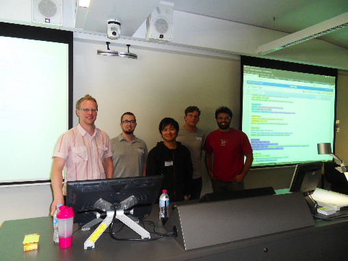

We ran our first bootcamp at the University of Adelaide from the 24th to the 26th of September 2013. Teachers and helpers came from all over the place: Ben Morris from the University of North Carolina acted as Principal Instructor, along with Jerico Revote from Monash University, Diego Barneche from Macquarie University, Philipp Bayer from the University of Queensland, Nicholas Crouch from Flinders University, and Nathan Watson-Haigh from the Australian Centre for Plant Functional Genomics (ACPFG), who also acted as the main organizer (thanks for that!).
The bootcamp was held in a "collaborative teaching suite" in the Ingkarni Wardli building at the University of Adelaide, a great room for this kind of workshop - lots of space, an overkill of projectors so that every corner could see what was going on on the instructor's workspace, *plus* monitors displaying the instructor's workspace on every group-table. Since students used remote Virtual Machines there were no problems with setting up software or anything else - using VMs is something to come back to in future workshops, since the VMs saved the hassle of getting all needed software running on all participants' machines. This saved half a day, not to speak of sanity.
Since the workshop was primarily for NGS bioinformaticians, Python was chosen as the main language. Along with an introduction to Python (which was cut short by a fire-alarm, no time for modules in Python), there was a short introduction to documentation, half a day on the principles of testing, a few hours on using make-files for reproducible research, and most importantly, an introduction to version control and collaborative work using Git and GitHub. For the first time (at least known to me), this workshop also featured a group-exercise at the end, which was only possible for two reasons: 1) this workshop ran for three days instead of the usual two; 2) most students were already used to programming in at least another language (e.g. C, Python, Perl). I was particularly impressed with the group-exercise, first because most students incorporated their own ideas and work, and second because students immediately started to incorporate everything they learned, from make-files to using GitHub to collaborate.
Luckily, most of the students were on roughly the same level when it came to prior knowledge, so we didn't have to split up the groups into "beginners" and "advanced".
In the end, I think the workshop went well and students learned a lot - I base this assumption mostly on the way students applied their newly minted knowledge during the group exercise. Also, we asked students to provide feedback immediately after each session, and, overall, comments were very positive.

Originally posted 2013-11-08 by Philipp Bayer in Bootcamps, University of Adelaide.
comments powered by Disqus